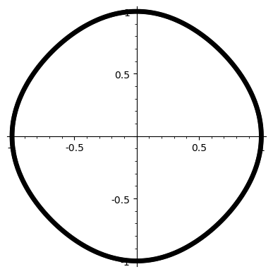
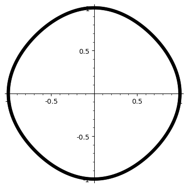

This little toy started life a few years ago, when I was looking at automorphisms in towers of cyclotomic fields, with particular interest in the -1/3 automorphism in the Iwasawa tower of 2^n th roots of unity. The -1/3 map has binary expansion 1010101..., and while I still haven't managed to figure out the original intended application, in trying to get some visual intuition along the way I ended up with some nice animations, e.g.


I made these in Mathematica, using code somewhere in the depths of some old computer. I don't precisely remember the terms of the student lisence I was using at the time, specifically whether posting these counts as a violation. I hope not.
It wasn't a very systematic project, I was more interested in coming up with pretty pictures to show people. The three here are particularly visually arresting, since the colours let one see the interweaving of points on the unit disc far better than the current black-and-white ones do. There are a few gifs from this old implementation that don't really work so nicely, but the first one especially shows off the 15-fold interlacing really nicely. Another important difference is that these gifs perform the automorphism, then reverse it, so all the points start back where they began. Compare this with the current implementation, where the lack of colours lets the automorphisms loop endlessly. There's pros and cons to both, but for the moment I'm happy with the toy being monochrome. If there is a nice way to compute the gifs on the fly, or make some in-browser animations, maybe I'll add those as options someday.
I hope the toy is useful to someone for some reason. I mostly made it to see if I could, and I find it interesting to see how the "choice of structure" at each level affects the overall pattern. I also enjoy fiddling the composition tool, it's again interesting to see how the patterns intermingle with one another. I think the visual intuition component is stretched at higher levels, past a certain point there's too many dots to really keep track of, and I find less that I'm gaining concrete intuition and more that I'm trying to read the mind of God.
In honour of the original task---understanding the -1/3 automorphism---here are a few gifs of its higher order approximations.

 

The Sagemath notebook I used to make the gifs is available on my GitHub.